Service Militaire de Gabriel
Au début d'Octobre 1909, Gabriel rejoint son régiment d'affectation à Lyon, il change ensuite de régiment et passe au 98e d'Infanterie. Il sera alors basé à Roanne pour la suite de son service. Il part sans doute avec un certain entrain et peut-être chante-t'il la Madelon avec ses copains de chambrée ...
Comme tout nouveau soldat, il reçoit son livret d'instruction militaire : L'instruction théorique du soldat par lui-même.
Ce petit livret est fascinant puisqu'il couvre tous les aspects de la vie du soldat mais décrit aussi précisément les tactiques élémentaires de " l'art de la guerre de l'époque". Ces tactiques seront scrupuleusement suivies par l'Etat Major au début du conflit. Au fil des cartes , nous partagerons quelques pages de ce livret.
Soldat ce livre est écrit pour toi ...
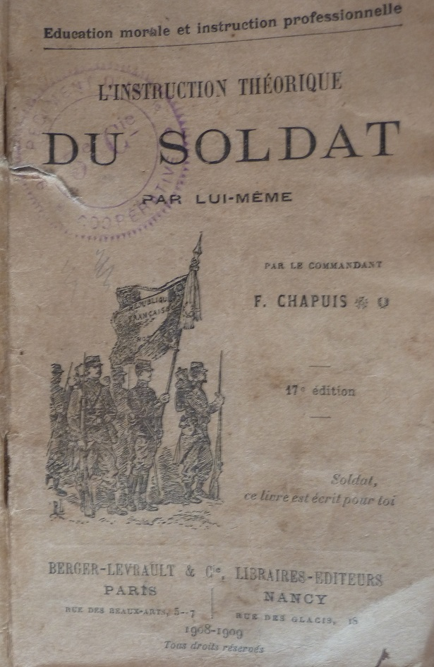
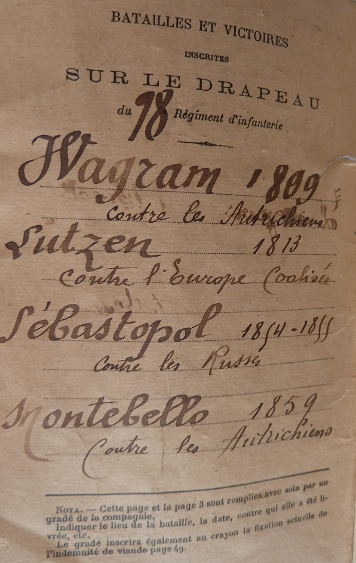
Après l'arrivée au régiment, s’ensuit un échange de cartes avec les frères, les parents et les sœurs dans lesquelles il parle de son métier de soldat et on lui donne des nouvelles du pays. On y parle également beaucoup du travail des champs, et comme plus tard à la guerre, le soldat paysan pense toujours au pays, au passage des saisons, au temps qu'il fait pour les récoltes et au dur labeur qu'il doit laisser aux autres …
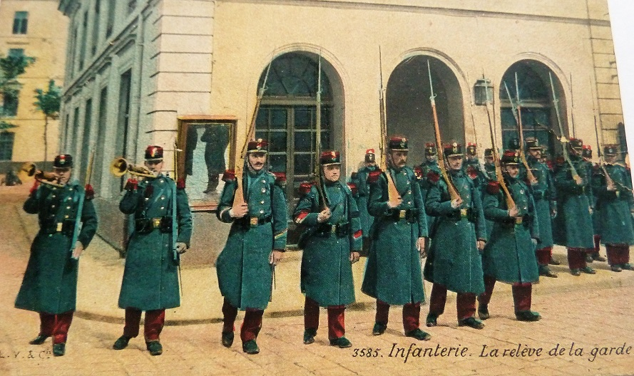
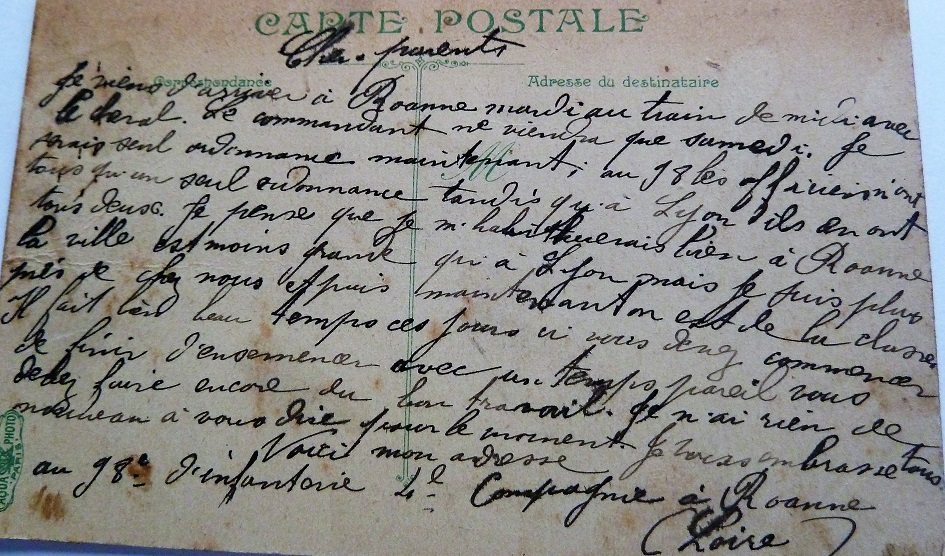
Chers parents,
je viens d’arriver à Roanne mardi au train de midi avec le cheval. Le commandant ne viendra que samedi. Je serai seul ordonnance maintenant. Au 98, les officiers n’ont tous qu’un seul ordonnance tandis qu’à Lyon ils en ont tous deux. Je pense que je m’habituerai bien à Roanne. La ville est moins grande qu’à Lyon mais je suis plus près de chez nous et puis maintenant on est de la classe.
Il fait bien beau temps ces jours-ci, vous devez commencer de finir d’ensemencer. Avec un temps pareil, vous devez faire encore du bon travail. Je n’ai rien de nouveau à vous dire pour le moment.
Je vous embrasse tous. Voici mon adresse, au 98eme d’Infanterie 4eme Compagnie à Roanne (Loire).
Gabriel
Cher frère,
Voila encore quelques jours de passés, nous nous portons tous bien, je désire que tu en sois de même. Je t’avais parlé de Pauline, elle n’est encore pas guérie mais elle va un peu mieux, elle est chez son père. Cette semaine il a fait bien beau temps, les nuits il gèle beaucoup et dans la journée le soleil est chaud.
Lundi Papa a apporté ses passe-partout réparer aux Mazières. Il a passé chez nous, il a laissé le grand pour scier le châtaignier. Nous l’avons arraché, il a fait beaucoup de bois.
Hier huit jours, nous avons vendu le piareau à Commentry. Félix Labey en avait un aussi, on les avait liés. Nous l’avons vendu 546 francs , la foire était bonne.
Ton frère, Auguste.
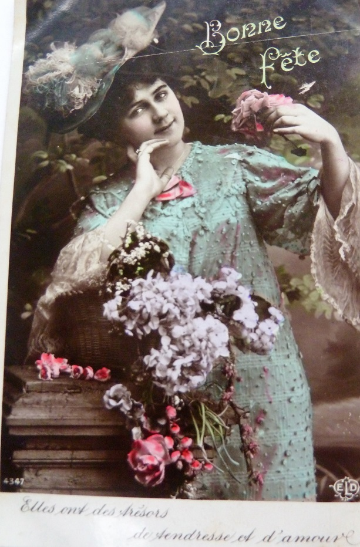
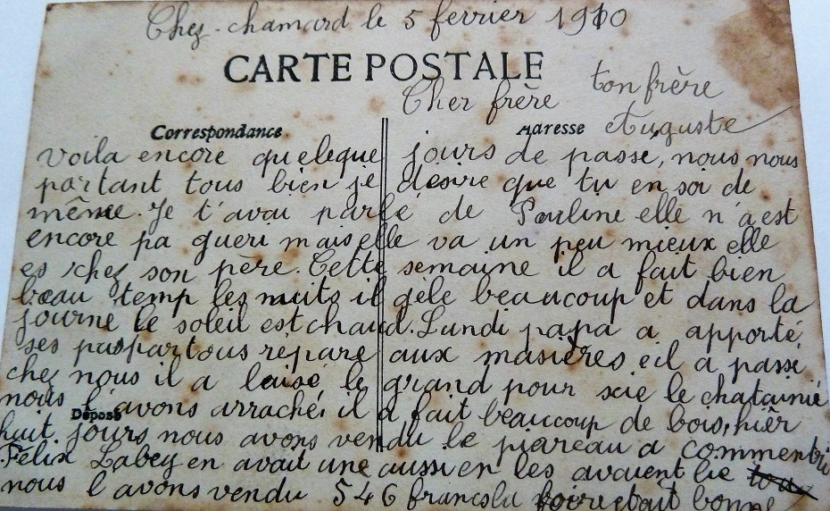
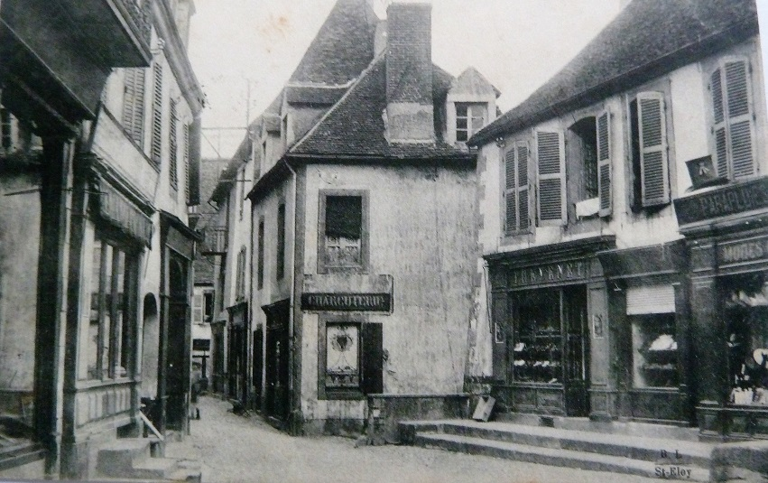
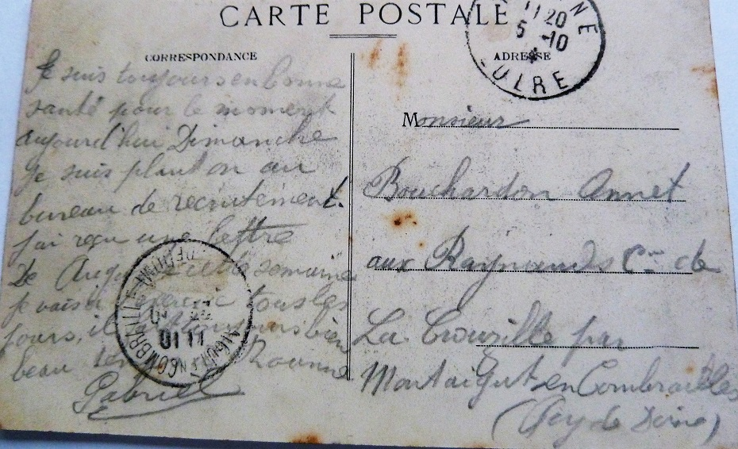
Je suis toujours en bonne santé pour le moment.
Aujourd’hui dimanche, je suis planton au bureau de recrutement. J’ai reçu une lettre de Auguste cette semaine.
Je fais de l’exercice tous les jours, il fait toujours bien beau temps à Roanne.
Gabriel
Cher petit frère,
je te fais réponse moi-même aujourd’hui. Je suis en bonne santé ainsi que toute la famille, je désire que tu sois de même. C ‘est ce que je crains, je pense que tu es malade depuis que je ne t’ai pas vu – le temps me dure beaucoup mais j’espère te voir bientôt.
Aussi quand tu sauras que tu viens en permission, écris tout de suite. Ce sera une joie pour moi, je t’aime d’une amitié inséparable si bien que je t’envoie 10 francs que j’ai économisé ces temps en allant à l’école.
Cher frère, il n’y a pas grand-chose de nouveau pour le moment. Nous n’avons pas fini de semer les pommes de terre. Il fait mauvais tous les jours, malgré cela les récoltes poussent bien et l’herbe aussi. Notre petit bétail profite bien, enfin tout va bien.
Mes deux sœurs ont mangé la noce de Pauline … Marie avait pour cavalier Peynet du tillieul et Maria, Felix Tillery, elles étaient bien montées.
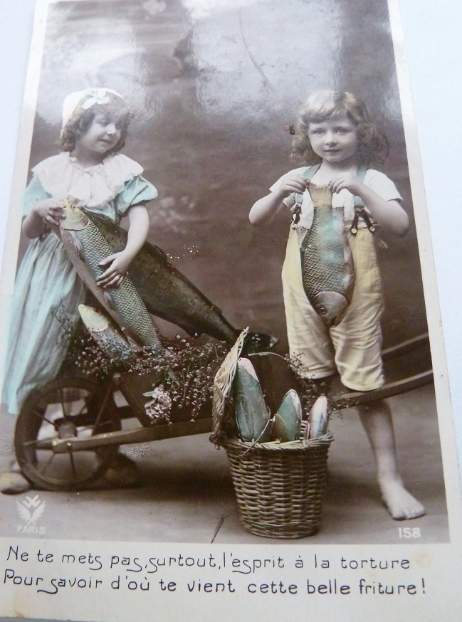
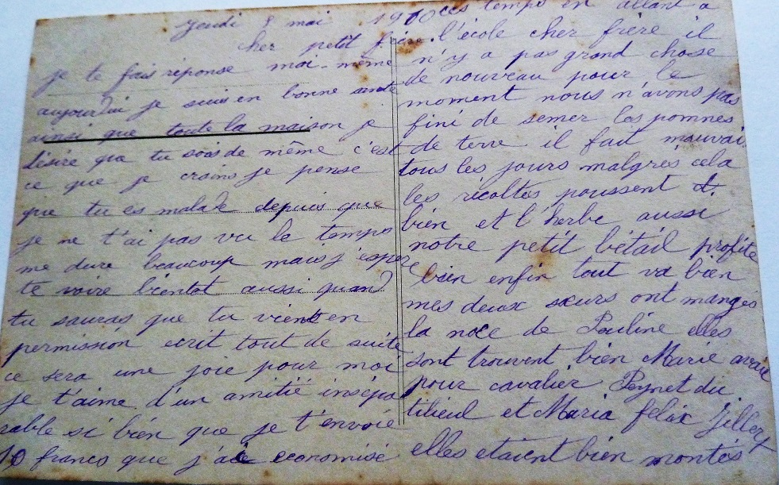
Voilà comment faire son sac et préparer son paquetage ...
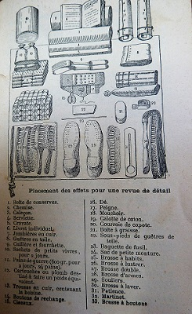
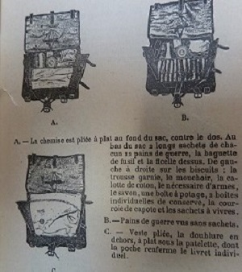
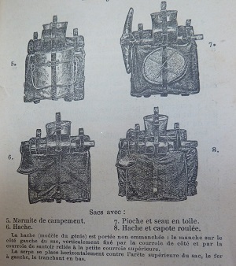
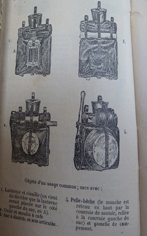
Voici deux cartes des deux petites sœurs jumelles. Comme elles, les cartes se ressemblent. L’écriture est maladroite mais appliquée, les mots sont simples et plein d’amour …
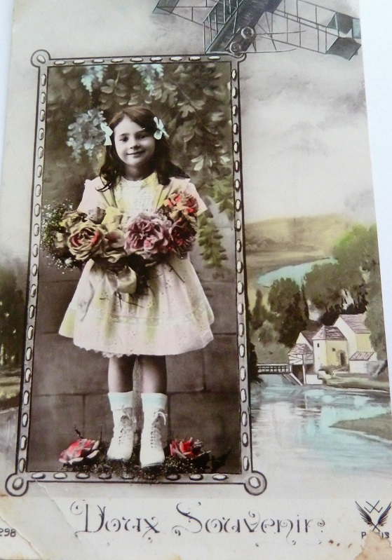
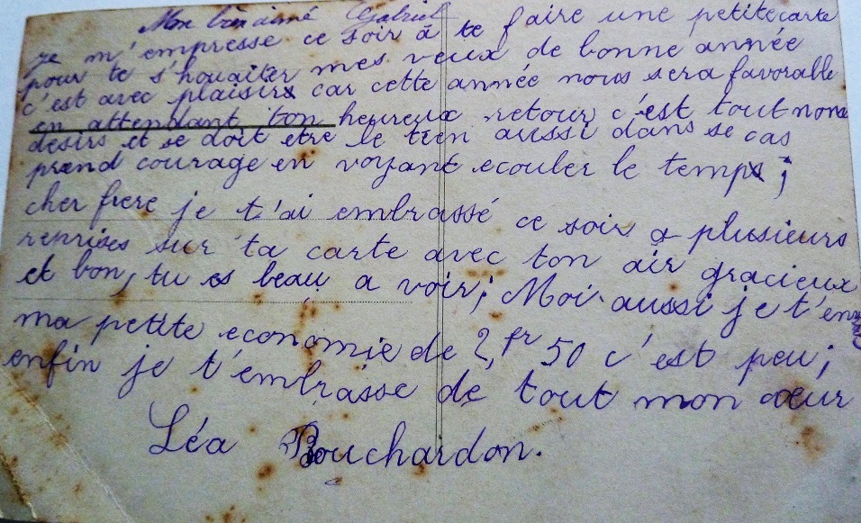
Mon bien aimé Gabriel,
je m’empresse ce soir à te faire une petite carte pour te souhaiter mes vœux de bonne année. C’est avec plaisir car cette année nous sera favorable en attendant ton heureux retour. C’est tout mon désir et ce doit être le tien aussi, dans ce cas prends courage en voyant écouler le temps.
Cher frère, je t’ai embrassé ce soir à plusieurs reprises sur ta carte. Avec ton air gracieux et bon, tu es beau à voir. Moi aussi, je t’envoie ma petite économie de 2 francs cinquante, c’est peu.
Enfin, je t’embrasse de tout mon cœur.
Léa Bouchardon
Cher Gabriel,
je viens avec plaisir te faire mes vœux les plus sincères de bonne et heureuse année. Elle sera bonne en effet car nous attendons le retour dans quelques mois.
J’ai été très contente de voir ta belle carte ; je l’ai embrassée plusieurs fois, tu es très beau avec ta physionomie si aimable et ta belle monture. Enfin, je t’envoie une petite étrenne de 2 francs cinquante, je ne suis pas bien riche tu sais.
Je termine ma petite lettre en t’embrassant de tout cœur.
Augustine
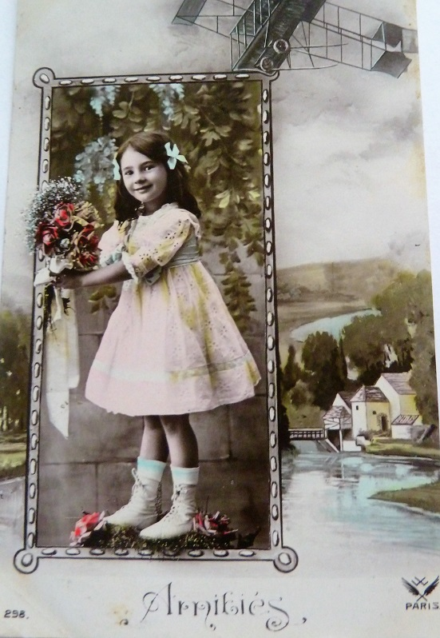
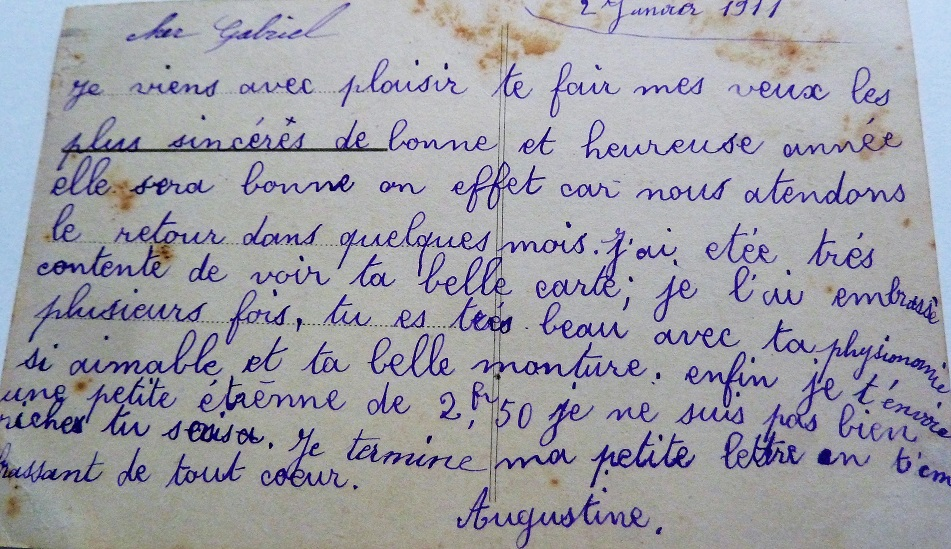
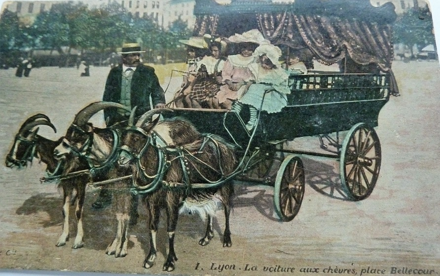
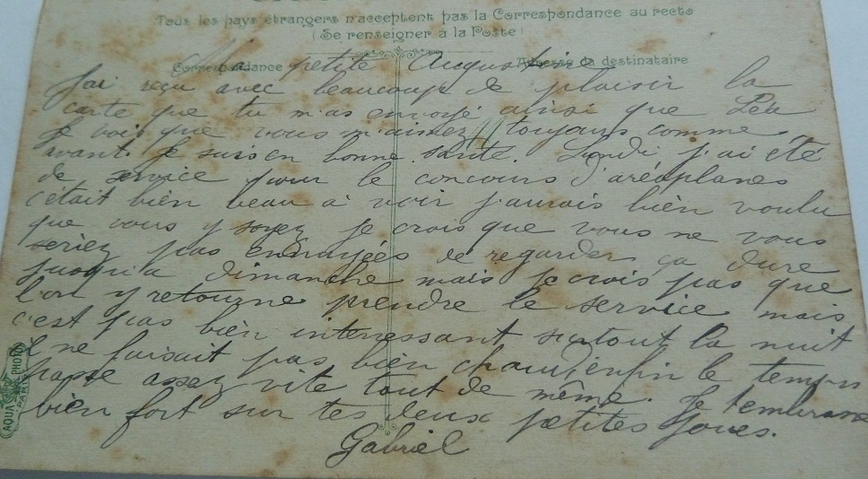
Ma petite Augustine,
J’ai reçu avec beaucoup de plaisir la carte que tu m’as envoyée ainsi que Léa. Je vois que vous m’aimez toujours comme avant. Je suis en bonne santé.
Lundi,j’ai été de service pour le concours d’aéroplanes. C’était bien beau à voir, j’aurais bien voulu que vous y soyez. Je crois que vous ne vous seriez pas ennuyées de regarder. Ca dure jusqu’à dimanche mais je crois pas que l’on y retourne prendre le service.
Mais c’est pas bien intéressant, surtout la nuit il ne faisait pas bien chaud. Enfin le temps passe assez vite tout de même.
Je t’embrasse bien fort sur tes deux petites joues.
Gabriel
Cher frère,
Je suis été très contente de recevoir une carte, j’ai vu tout de suite que c’était mon dodole.
A l’école, je travaille bien , je suis dans la 1ere division. Aujourd’hui, nous avons rassemblé nos petites économies pour t’acheter quelques timbres que nous fermerons dans l’enveloppe.
Nous ramassons les pommes de terre, mais il y en a guère. Je pense que tu viendras à Noel passer quelques jours avec nous.
En attendant ce beau jour, je t’embrasse sur les deux joues.
Léa
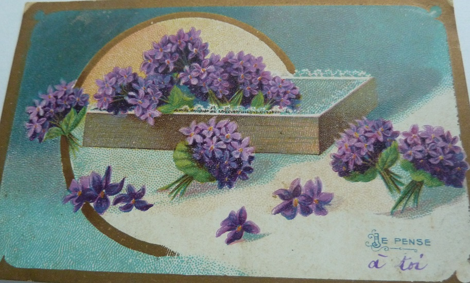
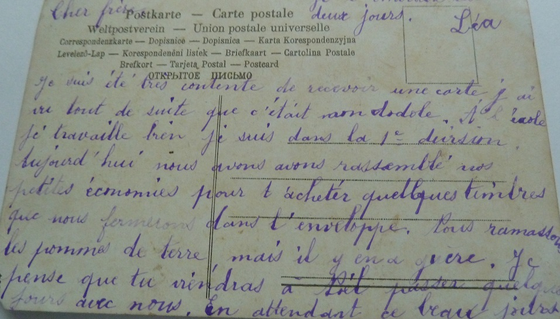
Quelques cartes aux parents décrivant les tâches du soldat …
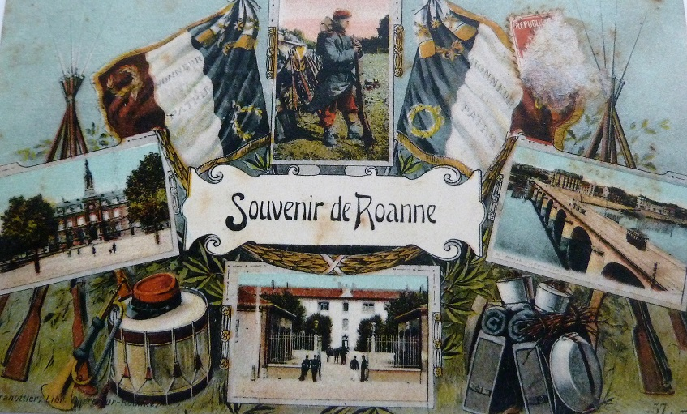
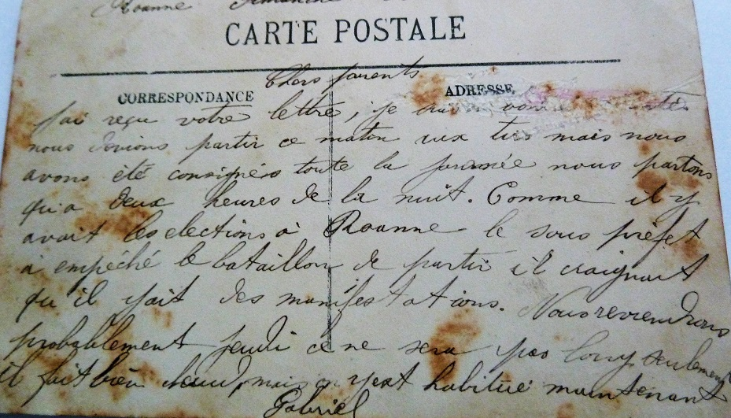
Chers parents,
J’ai reçu votre lettre ….
Nous devions partir ce matin aux tirs mais nous avons été consignés toute la journée. Nous partons qu’à deux heures de la nuit. Comme il y avait les élections à Roanne, le sous-préfet a empêché le bataillon de partir, il craignait qu’il y ait des manifestations.
Nous reviendrons probablement jeudi, ce ne sera pas long. Seulement il fait très chaud, mais on y est habitué maintenant.
Gabriel
Chers parents,
Les manœuvres ont fini hier soir aux environs du Puy. Nous sommes cantonnés et nous avons eu repos.
Lundi, nous serons à St-Etienne, et puis nous prendrons la direction de Lyon. Ca n’a pas trop été pénible tout de même, nous avons guère eu de mauvais temps.
Les réservistes sont partis hier soir pour être libérés à St-Etienne. Je suis en très bonne santé pour le moment.
Je vous embrasse bien fort tous.
Gabriel
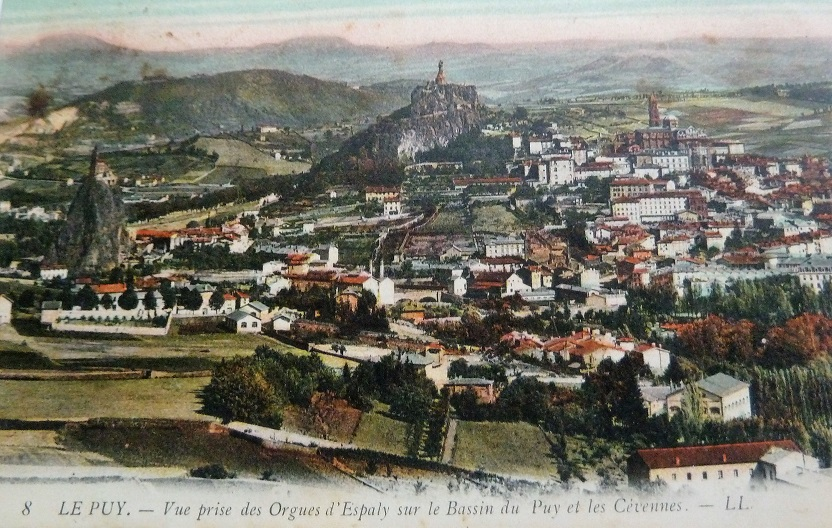
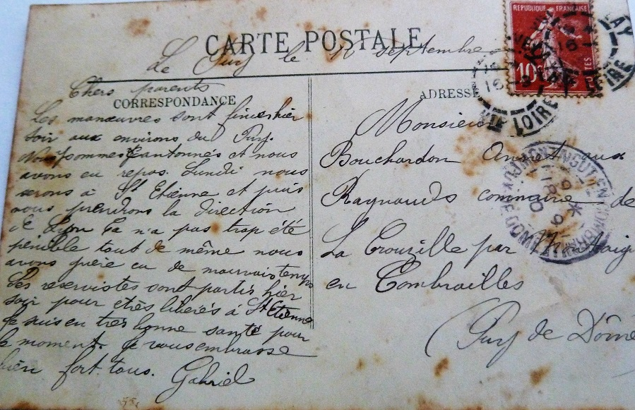
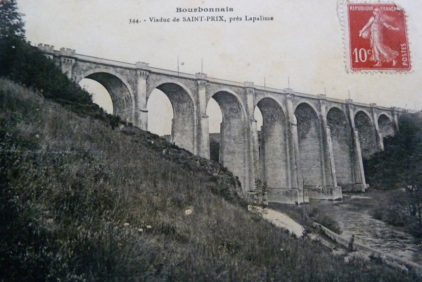
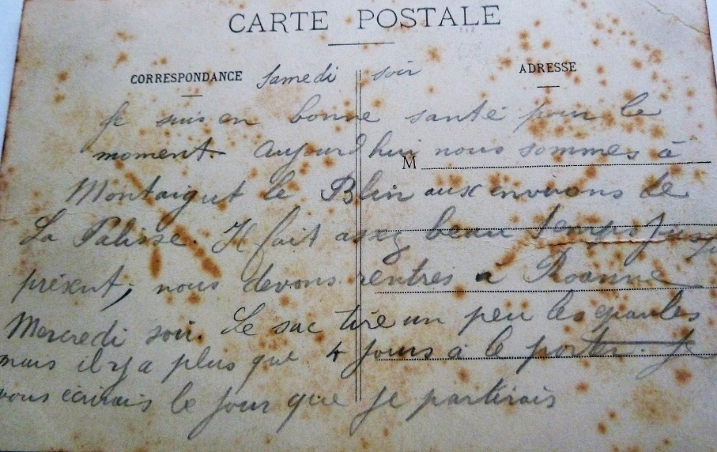
Je suis en bonne santé pour le moment.
Aujourd’hui, nous sommes à Montaigut-Le-Blin, aux environs de la Palisse. Il fait assez beau temps jusqu’à présent, nous devons rentrer à Roanne mercredi soir.
Le sac tire un peu les épaules mais il y a plus que 4 jours à le porter.
Je vous écrirai le jour que je partirai.
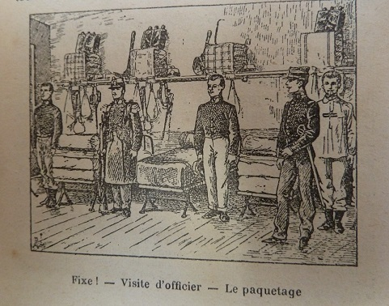
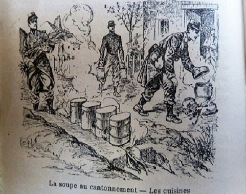
Quelques scènes de la vie quotidienne du soldat ...
Gabriel prend soin t’envoyer une carte à chacune des jumelles (pas de jalouses !) et il leur explique la vie du soldat, images à l’appui …
Ma petite Augustine,
Je t’envoie cette carte ainsi qu’à Léa pour te faire voir comme nous nous arrangeons dans ce métier.
Tu vois nos lits, ils ne sont pas bien larges mais je m’y trouve bien. Quand même, j’y resterais encore plus longtemps si je pouvais.
Tu dois aller à l’école tous les jours, surtout qu’il fait bien beau temps.
Le temps me dure qu’on soit à Noel, je pense que j’aurai bien une permission. En attendant, je t’embrasse bien fort.
Gabriel
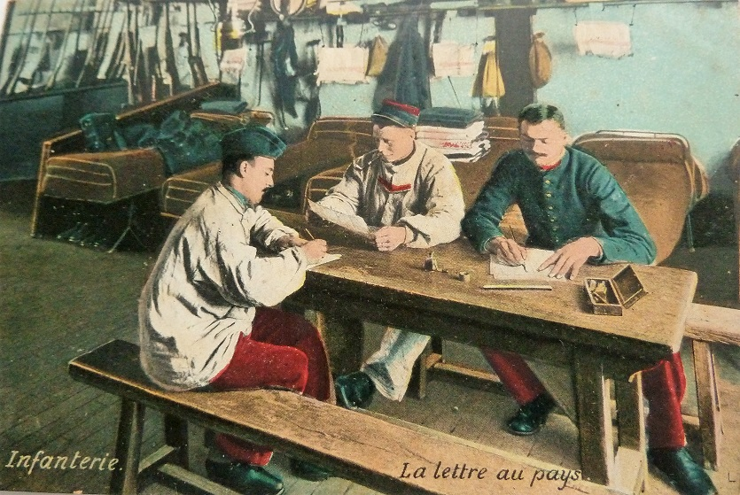
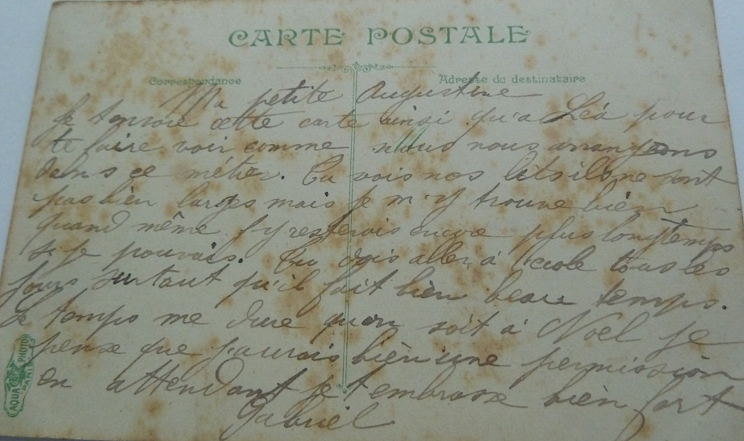
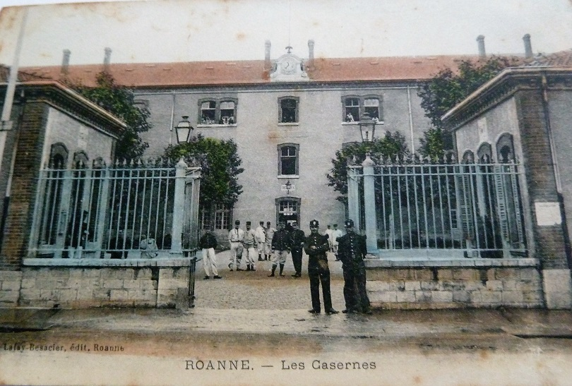
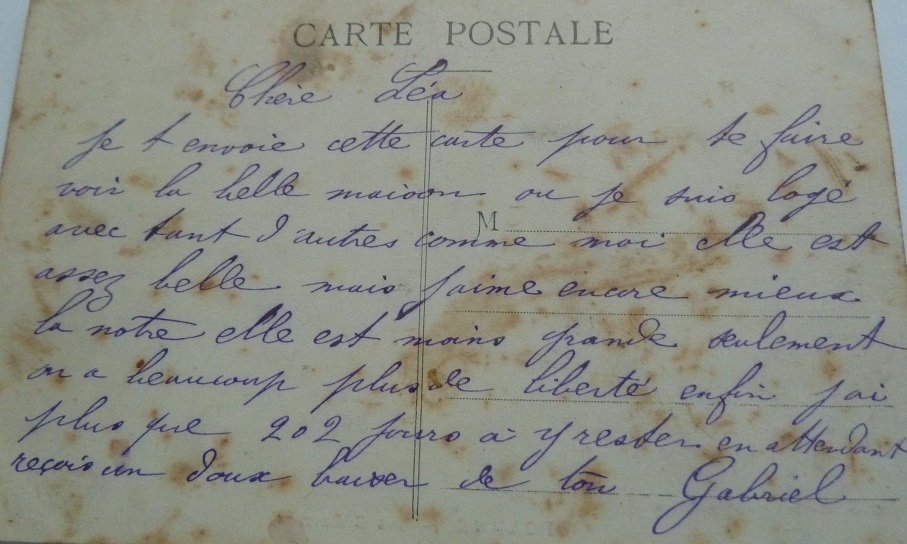
Chère Léa,
Je t’envoie cette carte pour te faire voir la belle maison où je suis logé avec tant d’autres comme moi.
Elle est assez belle mais j’aime encore mieux la nôtre, elle est moins grande seulement on a beaucoup plus de liberté.
Enfin, j’ai plus que 202 jours à y rester.
En attendant, reçois un doux baiser de ton Gabriel.
Chère Augustine,
Je pense à toi ce soir.
Le temps te dure sans doute de me voir, mais on sera vite à Pâques et j’espère bien aller te voir.
Tu vois sur cette carte les belles casernes qu’on a fait cette année à Roanne. Elles ne sont pas tout à fait finies, ce sera pour Antoine et Auguste, mois je crois pas y aller.
Je t’embrasse bien fort sur tes deux petites joues.
Gabriel
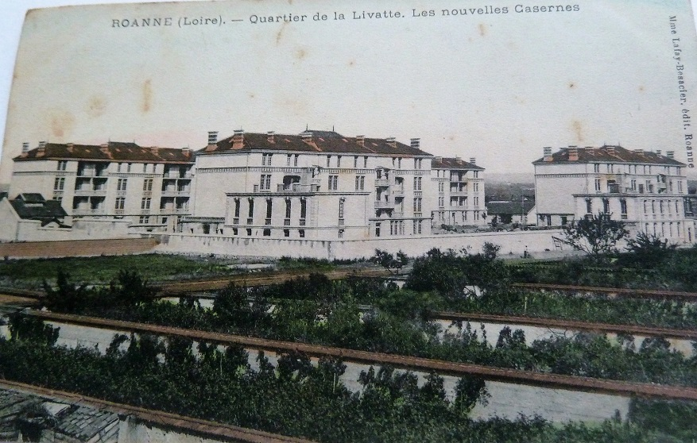

Gabriel commence à compter les jours et finalement la Classe arrive …
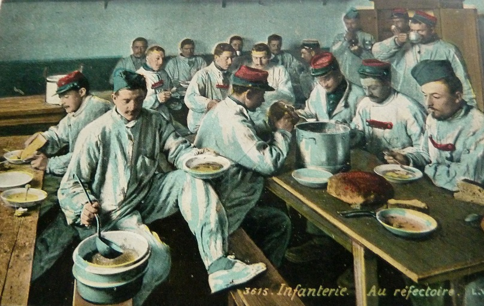
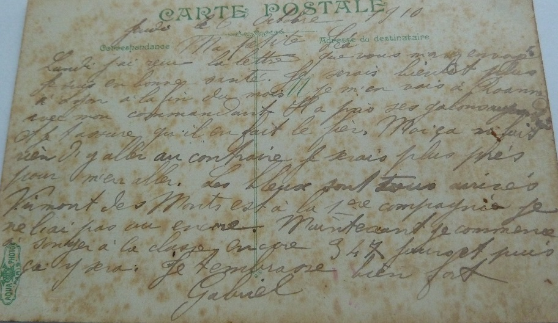
Ma petite Lea,
Lundi j’ai reçu la lettre que vous m’avez envoyée.
Je suis en bonne santé. Je serai bientôt plus à Lyon à la fin du mois. Je m’en vais à Roanne avec mon commandant. Il a pris ses galons et je t’assure qu’il en fait le fier. Moi, ça me fait rien d’y aller, au contraire je serai plus près pour m’en aller.
Les bleus sont tous arrivés, Virmont des Monts est à la première compagnie. Je ne l’ai pas vu encore.
Maintenant, je commence à songer à la classe, encore 347 jours et puis ça y sera.
Je t’embrasse bien fort. Gabriel
Chère Léa,
j’ai reçu votre dernière lettre avec plaisir ainsi que le mandat. Je vois que ça marche assez bien pour le moment.
Moi, je me plains pas puisque la classe vient tous les jours plus près, encore 90 jours et ça y sera.
Il fait pas trop beau temps à Roanne ces jours. Ca doit être bien ennuyeux à cause des foins.
Je suis en bonne santé.
Gabriel
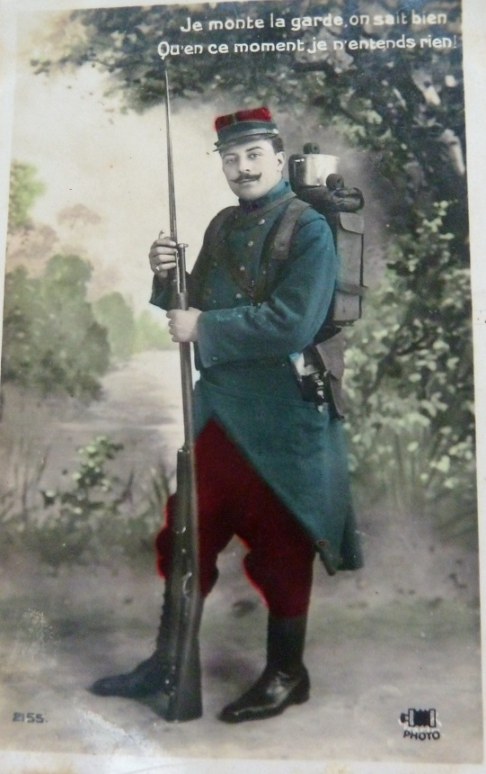
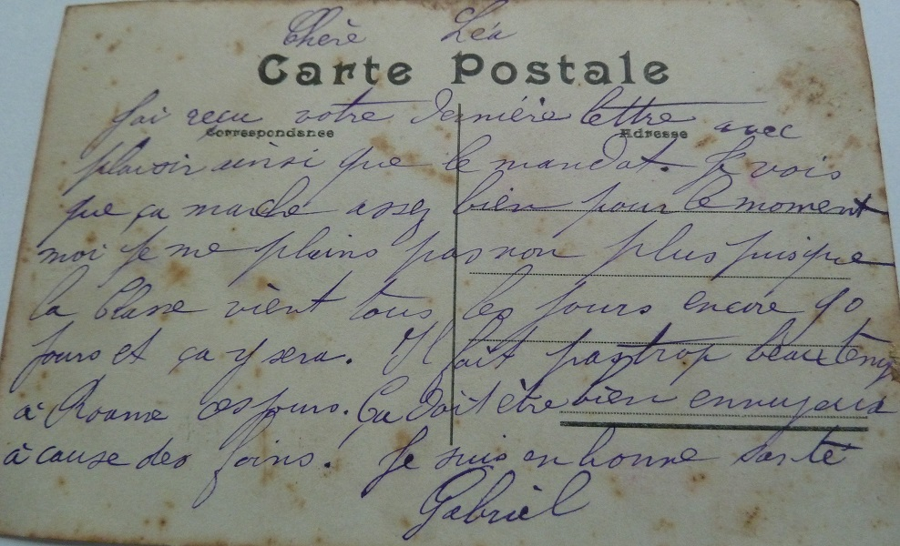
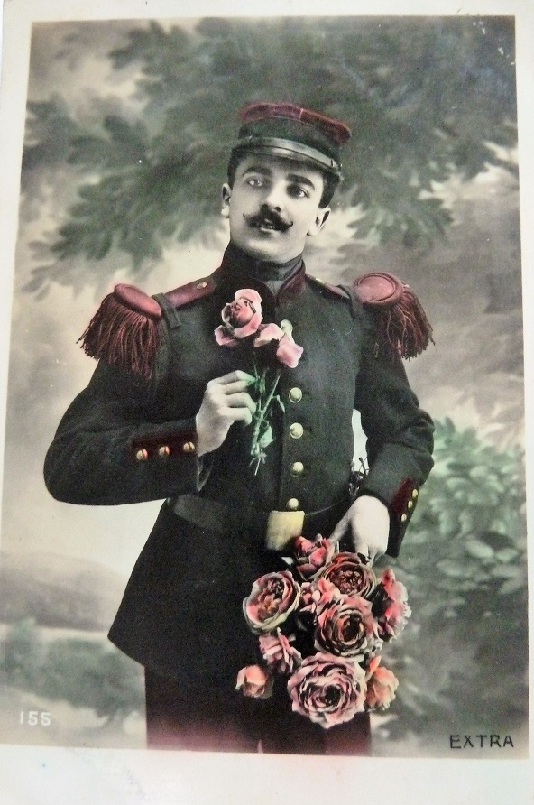

Chère Augustine,
Je pense à vous autres ce samedi soir pour vous dire que je suis toujours en bonne santé.
Je sais pas quand je partirai en permission. Le commandant ne m’en a pas parlé mais les bleus arrivent de Moulins demain. Ca lui sera facile de trouver un remplaçant.
Et puis songe bien que la classe vient vite maintenant. 90 demain matin.
Ton frère qui pense à toi souvent.
Gabriel
Chers parents,
J’ai reçu votre lettre, elles se sont croisées sans doute avec la mienne.
Je suis toujours en bonne santé ; il a tombé beaucoup d’eau ces jours-ci et le temps s’est un peu refroidi. Hier, j’ai versé mon fusil, je crois qu’ils ne veulent pas nous garder quand même.
A moins que ce soit changé, nous sommes libérés samedi à midi. Ca fait que je serai à Saint Eloy vers les six heures du soir mais je vous le dirai toujours la veille.
Je vous embrasse tous bien fort.
Gabriel
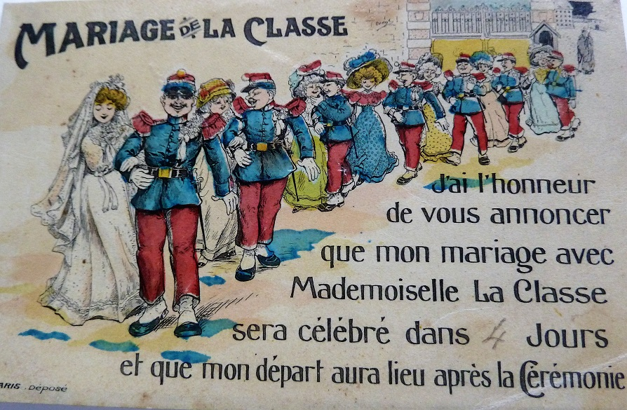
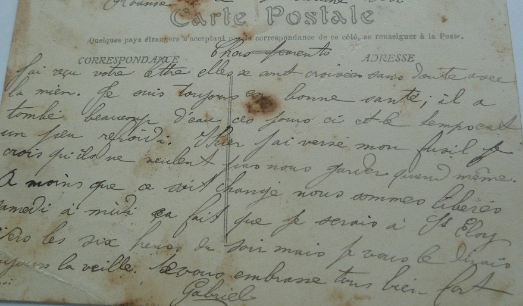